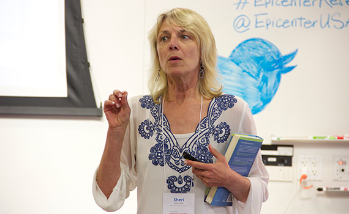
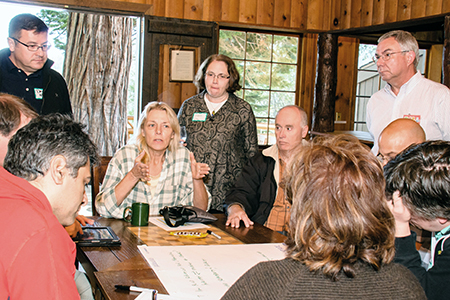

Sheri Sheppard of Stanford University and Epicenter has been named a 2014 U.S. Professor of the Year.

Sheri Sheppard, Epicenter’s co-Principal Investigator and leader of Epicenter’s research efforts, has been named U.S. Professor of the Year for doctoral and research universities by the Council for Advancement and Support of Education (CASE) and the Carnegie Foundation for the Advancement of Teaching. Sheppard, professor of mechanical engineering at Stanford University will receive the award at a ceremony on Nov. 20, 2014. She is honored along with three other professors who were were named Professor of the Year in their categories: community colleges, baccalaureate colleges and colleges that offer master's degrees.
For Epicenter, Sheppard leads an interdisciplinary community of researchers conducting a set of national studies on entrepreneurship in engineering collectively known as the Fostering Innovative Generations Studies (FIGS). Her team is exploring how entrepreneurship programs for engineers work; how the innovation and entrepreneurial interests of engineering students evolve over time and are influenced by their educational and workplace experiences; and how engineering students and faculty perceive and learn entrepreneurial content in traditional technical environments.
Sheppard confessed that her love of engineering and teaching was an emergent process. As a teenager, she hoped to pursue a career in law, but her father, an engineer, promised to fund law school only if she majored in engineering. She attended the University of Wisconsin-Madison and received her B.S. in engineering mechanics.
“I never made it to law school because I fell in love with engineering along the way,” Sheppard said during her acceptance speech on Nov. 20 in Washington, DC. “I fell in love with the problem solving. I fell in love with the analytic reasoning, the use of science, the creativity of design, and I especially fell in love with the messiness of manufacturing.”
Sheppard’s dedication to education began while she was a graduate student at the University of Michigan, Dearborn. Her mentor Professor George Kurajian encouraged her to give teaching a try and lead evening classes on materials science at Lawrence Institute of Technology. This experience changed Sheppard’s view of teaching. She viewed this experience as a challenge and an opportunity to make engineering accessible and relevant to non-traditional students, who were working through their bachelor’s degrees one course at a time.
“I wanted my students to understand the concepts that I loved,” Sheppard said to the award ceremony audience. “I strongly believed that their ownership of the ideas was important to their future careers.”
Sheppard received her Ph.D. from the University of Michigan, Ann Arbor. After working in the automotive industry for several years, including a role as senior research engineering at Ford Motor Company’s Scientific Research Lab, Sheppard joined the mechanical engineering faculty at Stanford in 1986. There, she teaches courses on mechanics for undergraduates and graduate students, courses on teaching, and courses and workshops on professional development.
She directs the Designing Education Lab at Stanford, is co-director of the Center for Design Research, and is chair of the Mechanical Engineering Department’s undergraduate curriculum committee. Sheppard’s engineering education research has included several NSF grants in addition to Epicenter, and she is a fellow of the American Society of Mechanical Engineering, the American Association for the Advancement of Science, and the American Society of Engineering Education. From 1999 to 2008, Sheppard was a Senior Scholar at the Carnegie Foundation for the Advancement of Teaching. She was recognized with the 2010 Stanford Walter J. Gores Award, the university’s highest honor for excellence in teaching, and received the ASEE Wickenden Best Journal of Engineering Education paper awards in 2005, 2008 and 2011. Sheppard also received Stanford University's 2014 President's Award for Excellence Through Diversity.
As an educator, Sheppard’s classes are far from the lecture- and problem-set-laden courses she took as an engineering student. She designs her courses to give students hands-on experiences that allow them to roll up their sleeves, explore, try, measure, question, and discover engineering for themselves. She said that this allows students to apply skills and concepts to real-world situations and to actively question how these skills might be part of their future studies and work.

Sheppard said that her work with Epicenter has influenced her teaching and research. She has spent the last three years collaborating with this national community of faculty, students, researchers and leaders on ways to help engineering undergraduates acquire the skills and mindsets of innovation and entrepreneurship. Doing so has not only provided new strategies for teaching, but opportunities to reframe her thinking around engineering education.
“Epicenter has given me the chance to think more explicitly about how business and economics fit into engineering work generally, and into engineering education specifically,” she said. “I am surrounded by people of action. This has pushed me toward framing research even more in terms of how it can affect educational practice.”
In addition to her work as an educator, researcher and leader at Epicenter and at Stanford, Sheppard is also an adviser to lecturers and faculty on course design and a mentor for undergraduate researchers and the next generation of teachers.
Her advice to educators—whether they are graduate students, postdocs, new assistant professors, or future K-12 teachers—is to view teaching as design, and to get to know your students.
“Look at each class session and course as an experiment or prototype. Be open to observing how it is going and asking your students what they think. Then use that input to make the next prototype,” she said.
When she taught as a graduate student, Sheppard said she learned the important early lesson that education is not about the educator. It’s about the students: their experiences, needs and dreams.
“Ask your students about who they are, what excites them, what they worry about,” Sheppard said. “In other words, get to know them as individuals and people. And share a little about yourself, too.”